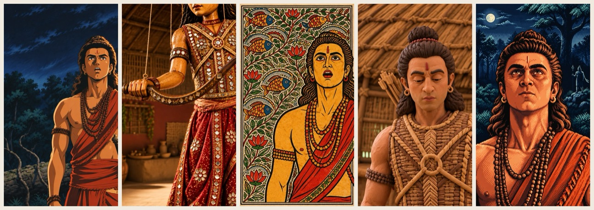
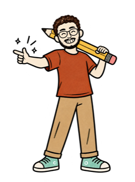

@theabhaychopra
@theabhaychopraWhat you need
- Claude with the Higgsfield connector switched on (claude.ai → + → Connectors). I used Claude Opus 5.5
- A Higgsfield plan with credits (higgsfield.ai). The connector spends your own credits
- A 5–10 second scene with dialogue from an official upload, like the studio's own trailer
Claude writes and sends every prompt. Higgsfield's models do the drawing and the moving: GPT Image 2.6 redraws the first frame of each shot, then Genjutsu Lite moves that drawing with the real shot's motion, so the head and mouth follow the actor.

Pick the scene

- One line people know. I used Ram's vow, "Main apni Sita ko wapas launga" (2:53–3:03 of the trailer)
- A scene with 4–6 cuts of about 2 seconds. Each cut gets its own look, so the style changes on the film's own edit
- Crop each cut to 9:16 and save its first frame as a picture
- Keep it short and credit the studio on screen and in your caption
Redraw a shot's first frame
Use the Higgsfield connector only, no browser. Redraw the FIRST image exactly (same framing, same pose, same people and positions) in the art style of the SECOND image: <your look>. No text.
First image = the shot's first frame. Second image = a test still of the look you liked. "Connector only, no browser" stops Claude from opening the Higgsfield website instead.
GPT Image 2.6, 9:16, two reference images — 0.25 credits a still.
Anime and kathputli puppet
1990s Japanese cel anime: clean ink outlines, flat cel shading, hand-painted anime background, dramatic rim light.
A Rajasthani kathputli string puppet: carved painted wooden puppet with big painted eyes, mirror-work cloth, visible puppet strings rising out of frame from the head and the raised arm, warm puppet-theatre light.
Madhubani, claymation and 16-bit pixel art
A traditional Madhubani folk painting: bold black outlines, flat red, ochre, green and indigo, background filled with fish, leaf and line patterns, double-line border, handmade paper.
An obvious stop-motion claymation figure. Everything is plasticine: chunky rounded clay face with visible fingerprints, a clay hair bun, rolled clay strips for the clothes, a hand-built miniature clay set. Matte clay, soft studio light. It must look like a handmade clay puppet, not a real person.
My first claymation still looked like the real actor with a filter. Adding "it must look like a handmade clay puppet, not a real person" fixed it.
A 16-bit retro video game cutscene: chunky pixel art, limited palette, dithered shading, crisp hard pixels. No text, no HUD.
Make each look move
Move the drawing with the real shot
Use the Higgsfield connector only, no browser. Use Genjutsu Lite at 720p. The image is <the styled still>, the driving video is <the original shot>. The character performs exactly the motion, head and mouth movement of the driving video, keeping the art style of the image.
Clips shorter than 3 seconds get refused, so I froze the last frame to make each shot 3 s long and used only the real part.
I tried restyling the clips directly with Gemini Omni Flash (edit) first. It refused all five shots, and Higgsfield gave the credits back. Grok Video with the line as audio failed too.
Genjutsu Lite copies the head and body, but not the lips. So one more step:
Fix the lips with HeyGen
In HeyGen, use Lipsync (precision mode). The video is the styled shot with the trailer's own audio inside it; the audio is the same line as a WAV.
HeyGen needs the speech inside the video too, and it takes WAV, not MP3. It worked on the pixel and puppet shots. On the flat anime and Madhubani faces it barely moved the lips, so for those I had two extra mouths drawn (slightly open, wide open) and switched them on the words. Draw every still with the mouth CLOSED, or nothing can open it later.
What it cost me
Claude Opus 5.5 is on Claude's paid plans; the free plan has Sonnet and Haiku. The Higgsfield connector works on the free plan, but the credits are always your own.
- Higgsfieldhiggsfield.ai
- Claude plansclaude.com
- RAMAYANA – Official Trailer (Sony Pictures Entertainment)youtube.com
The trailer clip belongs to Sony Pictures Entertainment and is used here for commentary. All five looks are AI redraws.

Five looks, one scene
Every prompt here is the one I ran for the reel, word for word.